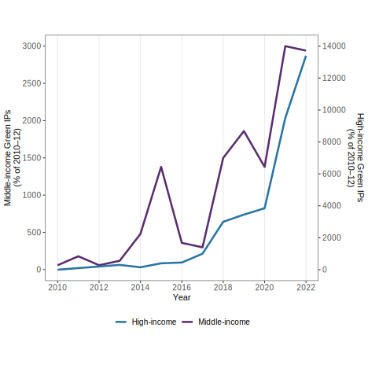
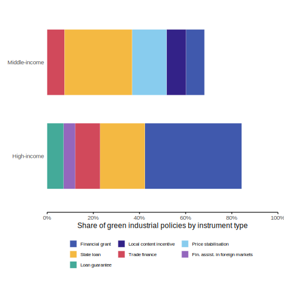

This paper presents a replication study of The Political Economy of Industrial Policy using R and R Markdown. The original analysis, conducted in Stata, is reproduced here with open-source tools to enhance transparency and accessibility. Alongside replicating key figures and tables, this work is framed as a learning journey in applying reproducible research methods and data science techniques. We were able to replicate three of the original figures with high accuracy, and we document this replication in detail throughout the paper. We share our experiences, challenges, and insights gained throughout the process to support others interested in replication studies and promote best practices in empirical political economy research. Individual author contributions to coding, analysis, and writing are detailed in the Author Contributions section.
Introduction
Green Industrial Policies – Redefining Growth for a Sustainable Future
As the global community faces intensifying climate change, environmental degradation, and socio-economic disruptions, the need for a new development paradigm has never been more urgent. Traditional models of industrialization, often centered around fossil fuel dependency and resource-intensive growth, are increasingly incompatible with the sustainability goals outlined in international agreements such as the Paris Climate Accord and the United Nations Sustainable Development Goals (UN SDGs) (UNFCCC, 2015; United Nations, 2015). In this context, Green Industrial Policies (GIPs) have gained prominence as a strategic framework to drive both environmental and economic transformation.
Green Industrial Policies can be broadly defined as public sector interventions aimed at promoting structural change towards low-carbon, resource-efficient, and environmentally sustainable economic activities (Altenburg & Rodrik, 2017). Unlike conventional industrial policies that focus primarily on productivity and competitiveness, GIPs intentionally embed ecological considerations into the design and execution of industrial development. They aim to foster green innovation, shift production toward cleaner technologies, and support sectors that contribute to environmental objectives such as emissions reduction, renewable energy, and circular economy models (Pegels & Altenburg, 2020). Through such policies, governments seek to align economic growth with environmental sustainability, creating a pathway for inclusive and green development.
The implementation of green industrial policies inevitably raises the question of the state’s role in shaping economic and technological trajectories. While markets are essential for resource allocation, they often fail to address environmental externalities and long-term sustainability goals due to their short-term profit orientation (Mazzucato, 2013). This creates a compelling justification for state-led intervention. Governments are not merely passive regulators but active agents in creating and steering markets, fostering innovation, and coordinating between sectors and stakeholders to guide economies toward sustainability (Rodrik, 2004). In the green transition, this role is even more critical, as emerging sectors often face high upfront costs, uncertain returns, and technological path dependencies that deter private investment without public support.
To operationalize these goals, a diverse set of policy instruments is used within green industrial strategies. These instruments can be broadly categorized into supply-side measures, such as public investment in green R&D, subsidies for clean energy, and support for sustainable infrastructure; and demand-side measures, such as green public procurement, carbon pricing mechanisms, and consumer incentives (Altenburg & Pegels, 2012). Feed-in tariffs for renewable electricity, tax credits for electric vehicle purchases, and industrial standards for energy efficiency are common examples. Moreover, some governments adopt mission-oriented approaches, where specific environmental goals—such as phasing out internal combustion engines or achieving net-zero emissions by a certain date—are used to organize cross-sectoral innovation and investment (Mazzucato, 2021).
Despite the promise of GIPs, their implementation is fraught with challenges. First, designing effective policies requires balancing environmental ambition with economic competitiveness—especially in carbon-intensive industries that may face disruption or decline (Meckling, Kelsey, Biber, & Zysman, 2015). Second, institutional constraints such as limited administrative capacity, inter-agency coordination problems, and political resistance from entrenched interests can hinder policy success. Third, financing green transformation—especially in developing economies—requires significant public and private investment, which may not be readily available or evenly distributed (Schmitz, Johnson, & Altenburg, 2013). There is also the risk of policy capture and greenwashing, where policies are designed to appear environmentally progressive without producing meaningful change (Newell & Paterson, 2010). Finally, the global dimension of the green transition introduces further complexity, such as the risk of carbon leakage and the need for international policy coherence.
In sum, Green Industrial Policies represent a vital and ambitious effort to reshape the industrial foundations of modern economies. By integrating environmental sustainability into industrial development, GIPs offer a way to harmonize climate action with economic resilience. Yet their success depends on strategic governance, adaptive institutions, and the careful design of supportive and accountable policy instruments.
Why Green Industrial Policies Matter – Globally and Economically
The growing urgency of the climate crisis, biodiversity loss, and unsustainable resource use has made the need for green transitions not just desirable but indispensable. Green Industrial Policies (GIPs) are critical because they offer a systemic approach to reshaping economic activity in ways that align with global sustainability goals. At a global level, GIPs are central to meeting the targets of the Paris Agreement and the UN Sustainable Development Goals (SDGs), particularly those related to climate action, clean energy, sustainable industry, and responsible consumption (UNFCCC, 2015; United Nations, 2015). Without structural changes in production and industrial systems, it will be impossible to decouple economic growth from carbon emissions and ecological degradation.
From a global justice perspective, green industrial policies also play a key role in addressing asymmetries between industrialized and developing countries. Many developing economies are simultaneously vulnerable to the impacts of climate change and constrained in their ability to adopt cleaner technologies due to limited financial and technological resources (Altenburg & Rodrik, 2017). GIPs can offer a mechanism to promote technology transfer, build green capabilities, and support inclusive development pathways that avoid the environmental costs associated with traditional industrialization (Pegels & Altenburg, 2020; Schmitz et al., 2013).
Economically, green industrial policies serve as a catalyst for innovation-driven growth. By targeting public support toward emerging sectors such as renewable energy, electric mobility, sustainable agriculture, and circular economy industries, GIPs stimulate private investment, create new markets, and increase productivity in future-oriented sectors (Mazzucato, 2013; Rodrik, 2004). Evidence from countries like Germany, China, and South Korea shows that well-designed GIPs can enhance both competitiveness and environmental performance (Altenburg & Pegels, 2012). Additionally, by internalizing environmental externalities (e.g., via carbon pricing or pollution regulation), GIPs help correct market failures that would otherwise inhibit the development of green sectors (Meckling et al., 2015).
Furthermore, the macroeconomic benefits of green industrial transformation are becoming increasingly evident. Investments in renewable energy, energy efficiency, and clean infrastructure generate more jobs per dollar spent compared to fossil fuel-based industries (International Labour Organization, 2018). According to the ILO, the global shift to a greener economy could create 24 million new jobs by 2030, offsetting job losses in high-carbon sectors (International Labour Organization, 2018). GIPs thus offer a powerful tool not just for decarbonizing economies, but also for addressing unemployment, inequality, and regional economic disparities.
Lastly, green industrial policies are also a matter of economic resilience and strategic competitiveness. As countries increasingly adopt climate regulations, firms that fail to transition may lose access to key markets or face carbon border adjustments. Countries that lead in green technologies will not only set environmental standards but also dominate emerging green value chains (Perez, 2010; Zhang & Gallagher, 2017). Therefore, green industrial transformation is not just an environmental imperative—it is an economic strategy for long-term competitiveness, stability, and prosperity.
What Is a Replication Study?
Replication studies are a fundamental component of the scientific method and serve as an essential mechanism for verifying and validating previously published research findings. In simple terms, a replication study involves repeating the analysis of a prior study using the same data, methods, and theoretical assumptions to determine whether the same results can be obtained (Camerer et al., 2016). The goal of replication is not to challenge or discredit the original research, but rather to test the reliability, transparency, and robustness of its conclusions.
There are different forms of replication. A pure (or direct) replication attempts to mirror the original work as closely as possible, using the same datasets, model specifications, and analytical procedures. An independent (or conceptual) replication, by contrast, might test the same hypotheses but use alternative methods, data sources, or analytical techniques to examine generalizability. Both are crucial to building cumulative knowledge and ensuring that results are not merely artifacts of specific contexts or errors.
In the context of economics and policy research, replication has become increasingly important as studies often inform real-world decisions with substantial economic, environmental, and social implications. Reproducibility has come under particular scrutiny in economics, leading to greater emphasis on open data, code sharing, and transparent research practices. Journals like the American Economic Review and platforms such as the AEA’s Data and Code Repository now often require authors to submit replication files to allow others to verify their work.
This project constitutes a replication study of Nathan Lane’s widely cited 2022 paper, “The Political Economy of Industrial Policy”. The paper investigates the determinants and effects of industrial policy using a global panel dataset and advanced empirical methods. As part of our replication effort, we focus on reproducing the three key figures from the original paper that illustrate its most important findings. These figures play a central role in visualizing the relationships between political incentives, industrial policy, and economic outcomes. By re-executing the original code and analysis in R, we aim not only to validate the robustness of the results but also to better understand the methodological design and empirical framework used in the study.
Moreover, this replication exercise offers a valuable educational experience. It allows us to engage deeply with real-world policy data and econometric techniques, assess the reproducibility of influential research, and contribute—however modestly—to the broader culture of scientific integrity. Whether the results match the original exactly or reveal discrepancies, the replication process generates insights that are useful for both scholars and policymakers.
Objectives
The main objective of this report is to carry out a systematic replication study of selected results from the paper “The Political Economy of Industrial Policy” by Réka Juhász and Nathan Lane (2024). Specifically, our group seeks to replicate three of the most central and illustrative figures from the paper, using the original datasets and methodological guidance provided by the authors. The replication process will be executed in R, with a focus on transparency, reproducibility, and methodological rigor.
This replication serves three primary purposes:
To verify the reproducibility of key empirical results published in the original study;
To develop a better understanding of the data construction, classification, and transformation procedures used in political economy research on industrial policy;
To critically assess any discrepancies between our replication results and those presented in the original paper, considering potential sources such as software differences, missing data, or undocumented transformations.
Overview of the Original Study
Juhász and Lane (2024) investigate the political economy underpinnings of modern industrial policy, offering a conceptual framework that explains why industrial policies — particularly green industrial policies — have re-emerged as prominent tools of statecraft despite their controversial history in economic thought. The authors argue that political constraints (such as time inconsistency, lobbying pressure, and electoral cycles) and state capacity (including administrative strength and bureaucratic autonomy) jointly shape the selection, design, and implementation of industrial policy interventions.
A central empirical contribution of the paper is the construction and use of a comprehensive global dataset on industrial policy measures. This dataset builds on earlier work by Juhász, Lane, and Rodrik (2022), which utilizes natural language processing (NLP) and supervised machine learning techniques to classify industrial policy interventions extracted from the Global Trade Alert (GTA) database. By linking this dataset to a range of country-level political and institutional indicators, the authors explore not only where and how industrial policies are used, but also why certain policy types — especially green industrial policies — are favored over others, such as carbon taxation, even when they may be less efficient from a purely economic perspective.
The paper’s empirical findings are presented through a series of informative figures and regressions that illustrate the nature, frequency, and institutional context of industrial policy implementation across countries and over time. These visualizations offer an accessible and policy-relevant way of communicating complex patterns and political mechanisms.
Replication Objectives
Our replication effort centers on reproducing three key figures from the original publication:
Figure 1 – Green Industrial Policy Activity in G20 Countries, 2010–2022
This figure provides a time-series view of the adoption of green industrial policy measures across the G20 countries.
Figure 2 – Top Five Green Industrial Policy Instruments across G20 Economies
This figure identifies the most commonly used green industrial policy tools, categorized by instrument type.
Figure 3 – Share of Autonomous Agencies Deploying Industrial Policies in G20 Countries
This figure links institutional features — specifically bureaucratic autonomy — to patterns of industrial policy deployment.
Our goal is to replicate these figures as faithfully as possible, based on the data and code that were made available by the original authors, or reconstructed from the methodology described in the paper and associated supplementary materials.
Data and Replication Process
We will use the original datasets compiled by the authors, including the industrial policy dataset based on the Global Trade Alert (GTA) database, and the dataset provided from running the STATA code. Where possible, we will document the structure and variables of the raw datasets and describe the data cleaning and transformation steps necessary to arrive at the final analytical dataset used in the paper. These steps may include filtering for specific countries (e.g., G20 economies), selecting time periods, classifying policy types, and aggregating events by sector, policy tool, or institutional characteristic.
We will also perform side-by-side comparisons of our replicated figures with the original ones to evaluate accuracy, highlight any discrepancies, and reflect on their causes. These comparisons may involve both visual (e.g., plot structure, trends) and numerical (e.g., frequency counts, shares) components.
In doing so, we aim to answer the following questions:
Do our replicated figures match the originals in terms of trends and values?
If not, what might explain the divergence (e.g., software versions, data changes, transformation assumptions)?
What insights does the replication process provide about the construction and communication of political economy evidence?
Broader Learning Objective
Beyond replication, this project offers our group the opportunity to engage directly with cutting-edge methods in political economy and industrial policy research. It reinforces the importance of open science, data documentation, and critical reading of empirical work. By working through real-world data and empirical models, we aim to not only validate published findings but also strengthen our own skills in empirical policy analysis.
Methodology
This section outlines the tools, data, and procedures used in our replication study. It explains how we selected the target paper, collected and prepared the data, and translated the original study’s methodology into executable R code. It also discusses key challenges encountered during the process. This serves as the technical and practical foundation for interpreting our replication results in the subsequent chapters.
Tools and Software
We used a combination of tools to carry out the analysis, collaborate as a team, and document our findings. Each tool served a specific purpose and collectively made our workflow smoother and more efficient.
R
Our replication was conducted using the R programming language, a powerful and open-source environment designed for statistical computing and data analysis (R Core Team, 2024). It was a good fit for our study because of its extensive ecosystem of packages and features for modeling, data processing, and visualization.
R enabled us to work with a range of file formats, perform data cleaning and transformation, and generate visualizations. Its versatility and popularity in data science made it the ideal platform for this replication.
R Studio
We utilized RStudio, an integrated development environment (IDE) for R, to enhance our programming efficiency. It offers helpful features such as syntax highlighting, plot previews, and smooth navigation between scripts and files, significantly improving our productivity.
R Packages
Several R packages were used for data manipulation, visualization, and format handling. These packages helped us maintain clean, organized code while streamlining repetitive or complex tasks.
-haven: Essential for importing Stata .dta files used in the original study.
-dplyr: Facilitated data manipulation operations like filtering, grouping, summarizing, and creating new columns, using a pipe-friendly syntax.
-tidyr: Helped reshape data between long and wide formats, enabling us to structure the dataset as required for plotting.
-ggplot2: Used to replicate the study’s figures, this package allowed us to build complex, layered visualizations with fine control over design and aesthetics.
-readxl: Used occasionally to import Excel and CSV files into R.
-stringr: Supported string manipulation tasks, such as extracting specific parts from column names (e.g., extracting a year from “FY12”).
R Markdown
Code, results, and commentary can all be combined into a single reproducible document using R Markdown (Baumer, Cetinkaya-Rundel, Bray, Loi, & Horton, 2014). This made our workflow consistent and transparent, as every change in the code was reflected immediately in the final report.
Our R Markdown workflow enabled us to: - Integrate code, visuals, and written narrative into a single file. - Maintain consistency between code and outputs. - Apply a uniform citation format and structure. - Collaborate efficiently using version control tools like Git.
Git and GitHub
We were also utilizing Git and GitHub in managing project versions and collaborating as a team. These tools enabled us to monitor our changes in files, prevented us from overwriting other people’s work and we could update our advancement online. This was essential because we had a team project.
Git views its data as a series of snapshots of a small filesystem. Each time a user commits, or saves the state of their project, Git effectively captures an image of the current state of all files and stores a reference to this snapshot. To optimize efficiency, if certain files remain unchanged, Git does not duplicate the file; instead, it stores a link to the previously stored identical file (Chacon & Straub, 2014).
Git helped the following: - Monitor modifications in code and documentation - Share files and work on the same files without overwriting one another - Restore older versions in case of mistakes
On GitHub we kept: - A centralized source of our source code - Our Quarto report and presentation - Issues and pull requests for work planning and change negotiation
Other tools
In addition to the core tools, we used: - RStudio IDE: Our main development platform for writing and executing code. - Microsoft Excel: Occasionally used for a preliminary view of raw datasets before loading them into R.
These tools together helped us manage a complex team project in data science, maintain reproducibility, and deliver a coherent replication report.
Paper Shortlisting
Selecting the right paper to replicate was one of the most critical steps in our project. We began by reviewing a wide range of literature in the areas of data science, business analytics, and economic policy. Our goal was to find a paper that was both relevant and engaging, while also feasible to replicate using the tools and data accessible to us.
During our search, we encountered several papers that initially seemed promising but ultimately proved unsuitable. For example, some studies relied on proprietary or restricted datasets, making replication impossible. Others lacked methodological transparency or failed to provide access to code, which undermined the credibility and reproducibility of their results.
A recurring challenge was the overuse of certain public datasets, particularly those found on platforms like Kaggle. While such datasets are freely accessible, they have often been analyzed extensively, with numerous code examples and solutions already available online. Replicating such work would not have added meaningful originality or value to our project.
We also came across papers that lacked academic rigor. Some publications—especially from outlets like MDPI—had issues such as insufficient peer review, vague data sources, or rushed publication timelines. We deemed these papers unsuitable due to concerns about their scientific validity and reliability.
After careful consideration, we ultimately selected the article The Political Economy of Green Industrial Policy by Réka Juhász and Nathan Lane (Juhász & Lane, 2024). This study stood out due to its credibility, clarity, and strong academic foundation. It provided accessible and well-documented data, a clear analytical structure, and a comprehensive replication package. Moreover, its focus on green industrial policy in G20 countries aligned well with our interests and course objectives.
The data used in the study were sourced from reputable platforms such as the Global Trade Alert database and the World Bank, ensuring reliability and reproducibility. This made the paper not only interesting but also practical for our replication efforts.
In summary, shortlisting the paper was more challenging and time-consuming than expected, but it was a vital step in ensuring that our replication study would be meaningful, rigorous, and feasible.
Data Collection
Our replication study aimed to reproduce the analyses presented in The Political Economy of Industrial Policy by Juhász and Lane (2024). A core component of this effort involved gathering and preparing the datasets on which the authors based their empirical findings and visualizations.
The original research relies on two major data sources:
Industrial Policy Data (IP_G20.dta)
Industrial Policy Data (IP_G20.dta) Using the Global Trade Alert (GTA) database, the original authors constructed a new dataset of industrial policy measures through machine learning and text analysis.
This dataset includes detailed information about policy announcements in G20 countries, along with an indication of whether a policy qualifies as “green.”
Key variables relevant to our replication include: - MeasureID: Unique identifier for each policy. - AnnouncedYear: Year the policy was announced. - GreenIP: Binary indicator for whether the policy is environmentally focused. - Autonomous: Indicates whether the implementing agency operates independently of political influence.
Other labels cover policy type, descriptions, and administrative entities.
Country Income Classification (wb.xlsx)
To distinguish between high-income and middle-income countries, the original paper uses annual income classification data from the World Bank.
These groupings were critical in disaggregating analysis across income levels—for example, in Figure 1, which plots trends separately for high-income and middle-income G20 nations.
This Excel file provides income classifications by country from 1987 onward. In our replication, we simplified the classification into a binary format: - HighIncome = 1 for countries classified as high income (H) - HighIncome = 0 for all other countries (middle or low income)
Challenges Faced:
The income data in wb.xlsx used cryptic shorthand (e.g., H, M, L), which had to be translated into numeric values suitable for analysis.
Merging the policy and income datasets posed several issues:
Inconsistent country naming conventions (e.g., “CountryStd” vs. “country_std”) required standardization before merging.
Time alignment was also a concern, as income classifications were recorded by calendar year, while policy data was based on the announcement year.
Additionally, the machine learning model used in the original paper to identify green policies was based on specific keywords. To align our count of green policies with the authors’, we had to ensure consistency with their classification approach or dictionary.
Because the GTA dataset includes many types of policy measures, we filtered for:
Policies marked as green (GreenIP = 1)
Policies both published and announced in the same year (AnnouncedSameYearPublished = 1), as emphasized in some figures of the original paper
Despite these challenges—ranging from inconsistent variable names to gaps in time coverage—we successfully reconstructed the datasets. Cleaning, aligning, and cross-referencing the data with the original publication were all part of this process.
Ultimately, our careful data preparation enabled us to replicate the key statistical summaries and figures presented by Juhász and Lane (2024) with a high degree of accuracy.
Use of Git and GitHub for Collaboration and Publishing
Collaborative work and version control played a crucial role in ensuring a smooth workflow throughout our replication study. Following the detailed instructions provided in Section 2.6 of Professor Dr. Stephan Huber’s lecture materials, we successfully adopted Git and GitHub for our entire project development cycle.
Getting Started
As none of us were highly experienced with Git before the project, we began by learning the basics: - Account Creation: Each team member created a GitHub account. - Git Installation: We installed Git locally and accessed it through Git Bash to run basic commands. - Repository Setup: A central GitHub repository was created and forked by each member into their individual accounts. - Cloning: Forked repositories were cloned to our local machines using git clone, allowing offline work.
Development Workflow
To maintain an organized and conflict-free collaboration: - Branching: We created individual branches using git switch -c branch-name for each task (e.g., code, report, presentation). - Local Editing and Commit Cycle: Changes were staged (git add .), committed (git commit -m “message”), and pushed (git push -u origin branch-name) regularly with clear commit messages. - Pull Requests: Changes were submitted through pull requests, which were reviewed by peers before merging into the main repository. - Version Tracking: Commands like git status and git log helped us track modifications and maintain version control.
Publishing on GitHub
To fulfill the project requirements, we published both the report and the presentation files (Quarto and HTML/PDF versions) on GitHub. This included: - Hosting all final source code and documentation in a public repository. - Linking GitHub content in the final submission as proof of open collaboration. - Uploading the presentation on GitHub Pages for easy access and review.
Reflections and Benefits
Using Git and GitHub brought multiple benefits: -Version Safety: We could revert to earlier versions if needed.
-Parallel Collaboration: Each of us worked independently without disrupting others’ work.
-Transparency: GitHub’s pull request and commit history offered traceability for our contributions.
-Skill Development: This was our first practical experience managing a collaborative coding workflow with Git, and it will be highly valuable in future academic and professional projects.
Through this experience, we deepened our understanding of distributed workflows, pull requests, and commit history — skills highly relevant for real-world data science collaboration
Conclusion to Methodology
In summary, the research was conducted through a well-structured and methodical approach to ensure a successful replication. We began by critically evaluating several papers based on data availability, transparency, and replicability, ultimately selecting one that met all criteria. The next phase involved the careful collection, cleaning, and transformation of data to match the structure and requirements of the original study.
To manage collaboration effectively, we made extensive use of Git and GitHub, which enabled version control, seamless teamwork, and the integration of individual contributions without conflict. These tools were instrumental in organizing our coding efforts and maintaining a unified workflow.
Overall, the methodology we followed not only laid a strong foundation for the replication but also provided valuable experience in data processing, reproducibility practices, and collaborative project management.
Process of Replication
This section outlines the detailed steps we took to replicate the figures and analysis from the original study, “The Political Economy of Industrial Policy” by Réka Juhász and Nathan Lane (2024). Our goal was to reproduce Figures 1-3 using R instead of the original Stata environment. This involved interpreting the original code structure, obtaining and preparing the data, rewriting analysis scripts, and addressing challenges related to format conversion and code compatibility. The process was guided by the README documentation included with the original replication package.
Understanding te Original Paper
The original paper,“The Political Economy of Industrial Policy” by Réka Juhász and Nathan Lane (2024), examines how political and institutional factors shape the design and implementation of green industrial policies in G20 countries. The authors argue that both high-income and middle-income countries have adopted industrial policies aimed at promoting sustainability. However, the tools and structures for implementation differ significantly based on political institutions. One of the main points is that middle-income countries tend to use more discretionary, state-led tools, while high-income countries rely more on independent agencies and rule-based frameworks. The paper discusses the influence of bureaucratic independence, state capacity, and recruitment systems in determining the choices and execution of these policies.
The authors present three key figures to support their findings, a time trend of green IP activity in G20 countries (Figure 1), a comparative breakdown of green policy instruments used by income group (Figure 2), and the role of bureaucratic meritocracy in shaping the use of independent agencies for policy implementation (Figure 3). These visuals form the backbone of the paper, and our project aimed to reproduce them closely using R.
The README file in the replication package served as a step-by-step guide on how the original figures were generated using Stata. According to the README, the authors started their workflow by running a master script (PolEcon_IP.do), which called a series of dependent .do files to handle various parts of data transformation and visualization. These included data cleaning scripts, routines for creating variables, and specific plotting files for each figure. The structure was modular and well-organized, but it needed a working Stata 17 environment with the required user-written packages.
Each figure had its own sub-script that processed a portion of the cleaned data and generated its visual output in .pdf format. The README stressed that the Stata scripts should be run in sequence and without interruption, as many depended on intermediate data in memory. Because of this, replicating the analysis outside of Stata required manually reconstructing each stage, including figuring out how variables were created, what filters were used, and how summaries were calculated.
While the documentation helped clarify the overall process, it assumed familiarity with Stata-specific syntax and workflows. Since our team used R, we had to translate not only the statistical logic but also the sequential dependencies across scripts. For example, instead of creating variables in memory, we had to explicitly create and save each cleaned object in R. This added complexity to our replication effort but also deepened our understanding of each analytical step.
We started with a careful review of the published article and its supplementary materials. The article provided the theoretical context, descriptions of the figures, and the methodological framework. However, the documentation lacked specific details on several important aspects, such as exact filtering criteria, thresholds used in creating variables, and assumptions made in interpreting coded indicators (e.g., green policy classification, high-income categorization).
Meanwhile, we examined the README and master do-files from the authors’ replication package. The documentation noted that the figures were generated by running the master Stata file PolEcon_IP.do, which executed a series of sub-scripts responsible for data cleaning, transformation, and visualization. Our team did not have access to Stata 17, which was necessary for running these scripts. This limited our ability to execute the original code directly and required a complete translation into R.
Data Acquisition
The original paper used multiple datasets, but the primary one was IP_G20.dta, which contained detailed information on industrial policy measures in G20 countries from 2010 to 2022. Some additional variables came from World Bank income classifications and V-Dem indicators. Our first step was to try importing the .dta files directly into R using the haven package. While this worked for reading the files, we quickly noticed that some variables appeared incomplete, while others were not structured as the code expected. This was likely because the Stata scripts that prepared these files had not been run yet.
At that point, we weren’t sure if we should recreate the entire cleaning and merging pipeline in R or find a workaround. After some discussion, we decided to ask our professor for help. He had access to Stata 17 and was able to run the complete set of .do files from the replication package. He then shared two cleaned .dta files with us. We used them directly for plotting and analysis in R. This let us skip the Stata-specific data preparation process and concentrate on the analysis steps.
To ensure everyone in the group could access the same version of the data, we uploaded the files to GitHub and used raw file links in our R scripts. We used the read_dta() function to load the data directly from GitHub. This setup maintained consistency in our work and made collaboration smoother since we didn’t rely on local paths or manual sharing.
Data Cleaning and Preparation
Although we received cleaned .dta files from our professor after running the Stata scripts, we still needed to ensure everything worked properly in R. When we first opened the datasets, some variable types were not recognized as expected. For example, the year (AnnouncedYear) and income group (HighIncome) variables sometimes showed up as character strings or doubles. We converted these to integers and factors to make sure that grouping, filtering, and plotting worked correctly without unexpected errors.
For Figures 1 and 2, the first step was to filter policies where AnnouncedSameYearPublished equals 1, as the original code and README emphasized matching publication and announcement years. After filtering, we grouped the data by AnnouncedYear and HighIncome to count green industrial policies using summarise() from dplyr. To reflect policy intensity relative to a baseline, we created an index where the average activity from 2010 to 2012 served as the base year (set to 100). This allowed us to show yearly changes across income groups. Next, we reshaped the data into wide format using pivot_wider() so that values for middle-income and high-income countries appeared in separate columns. This transformation was essential for creating the dual-axis plot in Figure 1. We carefully checked that missing combinations, like a missing year-income pair, were handled correctly using expand() and replace_na().
For Figure 3, we worked with a different dataset that tracked institutional features. We identified the meritocracy variable by searching for keywords like ‘merit’, ‘bureau’, and ‘recruit’ in the column names since the naming wasn’t clear. We grouped the data by meritocracy classification and calculated the mean share of autonomous agencies using summarise(). To make the results comparable with the original figure, we used round() to format the values and labelled the categories (‘Low’ and ‘High’) as factors.
Throughout this process, we relied on dplyr for filtering, joining, and summarizing tidyr for reshaping and ggplot2 for early visual checks of results. At multiple stages, we compared our intermediate outputs to what the original .do files or figures suggested. This helped us catch mistakes like off-by-one errors in year ranges or incorrect groupings before we moved on to plotting.
Adapting the Code
We translated the logic from the original Stata .do files into R. This part of the project required the most time. We needed to understand what the original code was doing and how to recreate it using different functions and packages in R.
For Figure 1, we used the dataset related to green IP activity. We filtered for policies that were both announced and published in the same year. We grouped the data by year and income group. Then we made sure all combinations existed using expand(). We counted green IPs and reshaped the data into wide format. To enable meaningful comparison, we built an index based on the averages from 2010 to 2012 for each income group. We plotted both middle-income and high-income trends using dual axes. Since their values differ in scale, we adjusted the high-income series proportionally to fit the same visual range using sec_axis().
For Figure 2, we looked at the share of green industrial policies by instrument type, divided by income group. We filtered green policies, grouped them by instrument, calculated the shares, and kept only the top five policy instruments for each group. After cleaning and reformatting the instrument names, we created a stacked horizontal bar plot to compare the shares. A custom color palette and manual label mapping helped clarify the differences between policy instruments. We ordered the income groups intentionally, with middle-income before high-income, to improve readability.
Figure 3 focused on the relationship between meritocratic recruitment and the share of autonomous agencies involved in implementing industrial policy. We found the relevant variable using a keyword search in the column names. We grouped the data by meritocracy level and calculated the average share of autonomous agencies. A horizontal bar plot displayed the results, with labels showing exact values for clarity.
For all three plots, we used ggplot2, dplyr, and tidyr, and exported the final figures as PDFs. We applied consistent themes and manual margin settings to match the formatting of the original paper. All output files were saved in an output folder for better organization.
Challenges Faced
One of the first and biggest issues we faced was that none of us had access to Stata 17, which was necessary for running the original replication scripts. This meant we couldn’t reproduce the figures directly using the authors’ code. We had the scripts and the README file, but we couldn’t run any of it ourselves. This delayed our work, and for a while, we weren’t sure how to proceed.
Eventually, we asked our professor to assist us. He had access to Stata and could run the full pipeline. He shared the cleaned .dta files with us, which we then used for everything in R. This helped significantly, but there were still some problems. For example, even though the data looked fine in Stata, some variables didn’t import correctly into R they showed up as character strings instead of numbers, or some labels were missing. We had to reformat several variables and rename some to make the code work.
We also encountered issues with RMarkdown files at one point. A few lines with stray formatting caused the whole script to fail, especially around library loading. Once we cleaned that up, the code ran normally. Another issue was related to plot axes , some charts displayed percentages when they should have shown decimal values like 0.2 or 0.5. We addressed that by switching to number_format() in ggplot2.
Later, when we tried to publish the report using GitHub Pages, it didn’t display correctly at first. We learned that GitHub Pages only recognizes index.html as the homepage, so we renamed the output file, and then it worked.
All these problems took time to resolve, and we had to keep checking that the final outputs still aligned with what the original paper showed. There were moments when our results didn’t match up, and we had to trace back through our filtering steps or re-read the .do files to figure out what we missed. Overall, the project taught us how tricky replication can be when switching tools, and how important it is to keep both the data, and the documentation organized and consistent.
Individual Replications: Code, Results, and Reflections
Manjunath Mallikarjun Kendhuli
Personal Contribution
My contribution to the project began even before we finalized the paper to replicate. At the outset, we, as a group, aimed to identify a research paper that was not only replicable but also recent, relevant, and grounded in accessible, high-quality data. Personally, I took an active role in exploring and shortlisting potential studies that could serve as suitable candidates for our replication work.
During this initial stage, I evaluated a handful of papers, primarily focused on employee analytics and the application of machine learning to predict performance metrics. Some of the early titles I reviewed included:
Predicting Employee Attrition: A Comparative Analysis of Machine Learning Models Using the IBM Human Resource Analytics Dataset
Predicting Accurate Employee Performance: An Evaluation of Regression Models
Data Analytics for Optimizing and Predicting Employee Performance
Although these studies initially appeared promising, a closer review revealed significant limitations. Most used highly popular, publicly available datasets—particularly those found on Kaggle—which are widely used by students and researchers alike. As a result, there already existed numerous solution codes, visualizations, and model evaluations publicly available online. This diminished the potential value of our replication, as there was little room to demonstrate original analysis or insight. Additionally, many of these papers lacked academic rigor, with some using synthetic or artificially structured data, which weakened the real-world applicability and academic contribution of their findings.
After considering these factors, our team collectively decided to move away from these options. I continued searching for papers that were professionally written, peer-reviewed, and transparent in terms of data and methodology. Eventually, I came across The Political Economy of Industrial Policy by Réka Juhász and Nathan Lane, published in the Journal of Economic Perspectives. The paper stood out for several reasons. Firstly, it tackled a highly relevant and contemporary topic—green industrial policy and its evolution across G20 countries. Secondly, and crucially, it came with a complete replication package: well-documented datasets, coding scripts, and clear figure-generating instructions. This made it an ideal candidate for a meaningful and realistic replication project.
After evaluating the feasibility of the paper, I shared it with my teammates. The response was overwhelmingly positive, and we all agreed it would make for an excellent foundation for our project. Our professor, Dr. Stephan Huber, also approved our choice, validating its relevance and appropriateness for the course objectives.
Once the paper was finalized, we divided responsibilities among the three group members. Since the article contains three main figures, we each selected one to reproduce. I was responsible for replicating Figure 1, titled Green Industrial Policy Activity in G20 Countries, 2010–2022 (Annual Count of Policies Relative to 2010–2012 Average).
Before diving into the code, I dedicated time to thoroughly understanding what the figure represented. This conceptual understanding was critical. Figure 1 tracks the number of green industrial policies announced annually by G20 countries over a 13-year period. Additionally, it makes a distinction between middle-income and high-income nations. The policy counts are normalized using the average for the years 2010–2012, setting that period as the base index of 100%. This design highlights changes in policy activity over time, emphasizing the significant growth—especially after 2015.
Armed with this understanding, I proceeded to work with the data and R code. My prior experience with coding primarily revolved around SQL and basic scripting from my previous professional role. Therefore, transitioning to R presented a moderate challenge. Nonetheless, I embraced it as an opportunity to learn and expand my technical toolkit.
I started by obtaining the required datasets from the replication package. These datasets included all the required variables and documentation to support the replication. I used R and a suite of relevant packages including haven, dplyr, and ggplot2 to carry out data cleaning, transformation, and visualization.
Data preparation was a critical and multi-step process. I filtered the dataset to include only policies that were both announced and published in the same year, aligning with the methodology adopted by the original authors to ensure consistency. Next, I grouped the dataset by AnnouncedYear and HighIncome, allowing me to compute annual green policy counts for both income groups.
One issue I encountered was missing data in specific year-income combinations. To address this, I created a complete grid template for all years (2010–2022) and both income groups. I then merged this template with the filtered dataset, filling in missing values with zeros. This ensured that the data structure was complete and suitable for comparison.
To generate indexed values, I calculated the average green policy count for each income group during the 2010–2012 baseline period. After that, I multiplied by 100 and divided the annual policy counts by this average to normalize them. This allowed us to plot the trend on an indexed scale, making it easier to compare trends across income groups despite absolute differences in raw counts.
I constructed the visualization using ggplot2. Because high-income countries had significantly more green policy activity, I implemented a dual y-axis design. To do this, the high-income index had to be rescaled to correspond with the middle-income countries’ visual range. I experimented with several scaling factors and carefully reviewed the resulting graph to ensure it mirrored the trend in the original paper.
Beyond the data work, I also played a key role in our team’s version control process.To keep track of code versions, documentation, and our final presentation and report, we made considerable use of Git and GitHub. This approach allowed us to work in parallel, track changes, and integrate each other’s contributions seamlessly. Although I was relatively new to Git, I quickly became comfortable with its workflow—creating branches, making commits, and pushing changes via pull requests.
In total, my role spanned the full lifecycle of the project: identifying the paper, evaluating its suitability, engaging in the replication process, managing the data and visualization for Figure 1, and collaborating on the overall report and presentation. This experience provided me with hands-on skills in data wrangling, academic analysis, reproducibility practices, and technical collaboration. It has been a valuable and transformative learning journey that has strengthened both my analytical capabilities and teamwork skills.
The figure 1 below presents the original version of the replicated chart from the article by Juhász and Lane (2024). It is included here to allow direct visual comparison between the original publication and our replicated output for accuracy assessment.
Figure 1. Green Industrial Policy Activity in G20 Countries, 2010–2022 (Original Figure). Source: Juhász and Lane (2024).
Replicated Figure and Code
To replicate Figure 1 from the Juhász and Lane (2024) article, I used R along with key packages including haven, dplyr, tidyr, and ggplot2. The objective was to visualize the annual number of green industrial policies (GreenIP) announced by G20 countries, distinguishing between middle-income and high-income groups, and indexing the values relative to the 2010–2012 average.
The process began by loading the processed dataset provided in the authors’ replication package. I applied a filter to retain only those policies that were both announced and published in the same year, ensuring consistency and methodological alignment with the original study.
Next, I generated a complete series of year-income group combinations covering the period from 2010 to 2022 to prevent missing values. The dataset was grouped by AnnouncedYear and HighIncome, and the number of green policies was counted per group-year pair. This was then merged with the year-income template, and any resulting gaps were filled with zeros.
I then pivoted the data to wide format to clearly separate values for middle-income and high-income groups. To index the values, I calculated the average policy count for each group during 2010–2012 and normalized all yearly values by dividing them by this baseline and multiplying by 100. This indexing allowed meaningful comparisons across groups despite differences in absolute volumes.
Finally, using ggplot2, I created a line chart with dual axes. The middle-income index was plotted on the primary y-axis, while the high-income index—after appropriate scaling—was plotted on the secondary axis. The resulting figure successfully mirrored the original in appearance, scale, and interpretation.
The plot clearly demonstrates the notable increase in green industrial policy activity, especially post-2015, with a significant spike after 2019. The final visual closely aligns with the original figure in layout, trends, and message.
Below, I provide the full R script used to generate this figure, followed by the resulting plot. The script demonstrates our data preparation and transformation steps, culminating in the accurate replication of the published visual.
# ============================# Load Required Libraries# ============================library(haven) # For reading .dta (Stata) fileslibrary(dplyr) # For data manipulationlibrary(tidyr) # For reshaping datalibrary(ggplot2) # For plotting# ============================# Step 1: Load Final Dataset# ============================# Dataset is already filtered for G20 and contains necessary variablesurl <-"https://github.com/anvitho07/Data-science-presentation-final/raw/refs/heads/main/dataset_for_greenIP_G20.dta"data <-read_dta(url)# ============================# Step 2: Filter Relevant Policies# ============================# Keep only policies announced & published in the same year# This improves reliability and consistencyfiltered_data <- data %>%filter(AnnouncedSameYearPublished ==1)# ============================# Step 3: Create Full Year–Income Combinations# ============================# Ensures that all year-income group pairs exist (2010–2022 for High/Middle income)template <-expand.grid(AnnouncedYear =2010:2022,HighIncome =c(0, 1))# ============================# Step 4: Count Green IPs per Year & Income Group# ============================green_counts <- filtered_data %>%group_by(AnnouncedYear, HighIncome) %>%summarise(GreenIP =sum(GreenIP, na.rm =TRUE), .groups ="drop")# ============================# Step 5: Merge Template & Counts (Fill Gaps with 0)# ============================processed_data <- template %>%left_join(green_counts, by =c("AnnouncedYear", "HighIncome")) %>%mutate(GreenIP =replace_na(GreenIP, 0))# ============================# Step 6: Pivot to Wide Format# ============================# Convert from long to wide so we can compare High vs Middle-income side by sideprocessed_data <- processed_data %>%pivot_wider(names_from = HighIncome,values_from = GreenIP,names_prefix ="GreenIP_" ) %>%rename(MiddleIncome_GreenIP = GreenIP_0,HighIncome_GreenIP = GreenIP_1 )# ============================# Step 7: Create Indexed Series (2010–2012 Average = 100)# ============================processed_data <- processed_data %>%mutate(base_middle =mean(MiddleIncome_GreenIP[AnnouncedYear %in%2010:2012]),base_high =mean(HighIncome_GreenIP[AnnouncedYear %in%2010:2012]),MiddleIncome_GreenIP_index = (MiddleIncome_GreenIP / base_middle) *100,HighIncome_GreenIP_index = (HighIncome_GreenIP / base_high) *100 )# ============================# Step 8: Plotting# ============================plot <-ggplot(processed_data) +# Middle-income line (left axis)geom_line(aes(x = AnnouncedYear, y = MiddleIncome_GreenIP_index, color ="Middle-income"), linewidth =1.2) +# High-income line (right axis, rescaled)geom_line(aes(x = AnnouncedYear, y = HighIncome_GreenIP_index * (3000/14000), color ="High-income"), linewidth =1.2) +# Y-Axis setupscale_y_continuous(name ="Middle-income Green IPs\n(% of 2010–12)",limits =c(0, 3000),breaks =seq(0, 3000, 500),sec.axis =sec_axis(trans =~ . * (14000/3000),name ="High-income Green IPs\n(% of 2010–12)",breaks =seq(0, 14000, 2000) ) ) +# X-Axisscale_x_continuous(name ="Year",breaks =seq(2010, 2022, 2) ) +# Manual colors (Purple and Blue)scale_color_manual(name =NULL,values =c("Middle-income"="#5B2C6F", # Purple"High-income"="#2874A6") # Blue ) +theme_bw() +theme(aspect.ratio =0.9,legend.position ="bottom",legend.text =element_text(size =10),axis.text =element_text(size =10),axis.title =element_text(size =11),panel.grid.major.y =element_blank(),panel.grid.minor =element_blank() )# ============================# Step 9: Save as PDF# ============================ggsave("figure1_GreenIP_TimeTrend.pdf", plot = plot, width =8, height =6, device ="pdf")# Show the plotprint(plot)

Learnings and Reflections
This replication task allowed me to gain a variety of technical skills and teamwork experience:
-Understanding Replication Logic: I gained a deeper understanding of how academic figures are constructed from raw or processed data, and how careful indexing, filtering, and formatting can significantly impact the results.
-Hands-on R Practice: I became more confident working with R, especially with the dplyr package—using functions like group_by(), summarise(), mutate(), and pivot_wider(). I also learned how to import .dta files using the haven package, which was new to me.
-Plotting with ggplot2: I learned to create clear, customized dual-axis plots. One key takeaway was adjusting scaling factors to visually align trends between high-income and middle-income groups, which greatly improved the clarity of the graph.
-Interpreting Economic Figures: Beyond the technical side, I improved in analyzing economic policy trends. It was especially insightful to observe the sharp rise in green industrial policy activity after 2015, as highlighted in the original study.
-Working in a Team: Our team maintained consistent communication and divided responsibilities effectively. Using Git and GitHub helped us coordinate code development and report writing seamlessly.
Overall, this project has been a valuable blend of technical learning, economic insight, and collaborative teamwork.
Teamwork and Collaboration
Collaborating with Anvith and Abdalla on this replication project was both smooth and rewarding. From the start, we divided responsibilities based on our strengths and interests, which helped us progress efficiently. We relied on GitHub for version control and task sharing, and regularly exchanged updates to stay aligned. One minor challenge we faced was that each of us required different amounts of time to grasp specific concepts or complete tasks, which occasionally affected our pace. However, through consistent communication and mutual support, we managed to overcome such differences. This project highlighted how a well-coordinated team can adapt, learn, and deliver quality work together.
Anvith Amin
Personal Contribution
I was responsible for setting up the GitHub repository for our team and guiding my teammates on how to push their code and data using Git. I created the repository, organized the folders clearly, and committed the base template so everyone could clone it and work consistently. I also explained how to use basic Git commands like git add, commit, pull, and push. I supported teammates when they faced merge conflicts or setup issues. Throughout the project, I managed updates to the main branch and regularly pushed my code to keep the repository current. This helped streamline collaboration, track changes over time, and prevent overwriting each other’s work. I was also in charge of setting up the APA Quarto template that we used to write and render the final report. I ensured the extension was properly installed and configured, and I tested the rendering to confirm the output followed APA 7 style.
For this part of the project, I was responsible for replicating Figure 2 from the original paper. I worked independently on loading and filtering the green industrial policy dataset. I identified and grouped policies based on instrument type, applied income group classification, calculated the share of each instrument, and created the final plot in R. I also made sure that the colour palette and instrument labels matched the structure of the original figure.
I coordinated with my teammates to understand the original Stata code and clarified parts where the logic did not translate directly to R. I specifically cross-checked how the top 5 instruments per group were determined and verified results by comparing them with the original visualization.
Original Figure 2.
The figure below presents the original version of the replicated chart from the article by Juhász and Lane (2024). It is included here to allow direct visual comparison between the original publication and our replicated output for accuracy assessment.
Figure 2. Top Five Green Industrial Policy Instruments across G20 Economies by Income Group, 2010–2022. Source: Juhász and Lane (2024).
Replicated Figure and Code
This code starts by downloading the cleaned dataset directly from a raw GitHub link using download.file() and then reads it into R using read_dta() from the haven package, which is designed for importing Stata files. The dataset contains policy-level data for various G20 countries. The code filters the data to only include entries where GreenIP == 1, meaning the policy has been identified as a green industrial policy. A helper column n = 1 is added to simplify the counting process.
It then groups the data by two key variables: HighIncome (indicating whether a country is high-income or middle-income) and MeasureType (the type of policy instrument). The code counts the number of green IP cases per group, calculates the total for each group, and then derives the share (sh_gIP) each measure contributes to the total. A ranking is applied using rank() to keep only the top five instruments per group.
To prepare for plotting, it uses expand.grid() to generate all possible combinations of HighIncome and MeasureType, ensuring that missing combinations are included with a share of zero. The result is joined back with the ranked data using left_join().
For presentation, the code standardizes the instrument type strings using gsub() and then defines a factor ordering for consistent axis labeling. It creates a custom color palette and human-readable labels for the legend. Finally, it uses ggplot2 to build a stacked bar plot where each bar represents one income group, and the stacked segments show the instrument shares. The chart is rotated using coord_flip() to improve readability and saved to PDF for use in the final report.
## ==============================# Load required libraries for data manipulation and plotting## ==============================library(haven)library(dplyr)library(tidyr)library(ggplot2)library(ggthemes)## ==============================# Download the .dta file from GitHub and read it into R## ==============================url <-"https://github.com/anvitho07/Data-science-presentation-final/raw/refs/heads/main/dataset_for_greenIP_G20.dta"temp_file <-tempfile(fileext =".dta")download.file(url, temp_file, mode ="wb")df <-read_dta(temp_file)## ==============================# Create a folder to store output plots if it doesn't already exist## ==============================if (!dir.exists("output")) {dir.create("output")}## ==============================# Step 1: Filter data to green IP, group by income and instrument type, and compute shares## ==============================df_share <- df %>%filter(GreenIP ==1) %>%mutate(n =1) %>%group_by(HighIncome, MeasureType) %>%summarise(n =sum(n), .groups ="drop_last") %>%mutate(TotalGreenIP =sum(n)) %>%mutate(sh_gIP = n / TotalGreenIP) %>%mutate(rank =rank(-n, ties.method ="first")) %>%filter(rank <=5) %>%ungroup() %>%mutate(MeasureType =gsub(" ", "", MeasureType),MeasureType =gsub(",", "", MeasureType),MeasureType =case_when( MeasureType =="Financialassistanceinforeignmarket"~"Financialassistforeignmkt",TRUE~ MeasureType ) ) %>%mutate(HighIncome =factor(HighIncome, levels =c(0, 1), labels =c("Middle-income", "High-income")) )## ==============================# Extract list of top measure types to preserve order## ==============================top_measures <-unique(df_share$MeasureType)## ==============================# Fill in any missing combinations of income group and measure type## ==============================df_complete <-expand.grid(HighIncome =unique(df_share$HighIncome),MeasureType = top_measures) %>%left_join(df_share, by =c("HighIncome", "MeasureType")) %>%mutate(sh_gIP =ifelse(is.na(sh_gIP), 0, sh_gIP),MeasureType =factor(MeasureType, levels = top_measures) ) %>%arrange(HighIncome, MeasureType)df_complete$HighIncome <-factor(df_complete$HighIncome, levels =rev(levels(df_complete$HighIncome)))## ==============================# Set custom colors and readable names for each policy instrument## ==============================colors <-c("Financialgrant"="#4059AD","Stateloan"="#F4B942","Tradefinance"="#D1495B","Loanguarantee"="#44AA99","Financialassistforeignmkt"="#9467BD","Pricestabilisation"="#88CCEE","Localcontentincentive"="#332288")measure_labels <-c("Financialgrant"="Financial grant","Stateloan"="State loan","Tradefinance"="Trade finance","Loanguarantee"="Loan guarantee","Financialassistforeignmkt"="Fin. assist. in foreign markets","Pricestabilisation"="Price stabilisation","Localcontentincentive"="Local content incentive")## ==============================# Plot the stacked bar chart using ggplot2## ==============================p <-ggplot(df_complete, aes(x = HighIncome, y = sh_gIP, fill = MeasureType)) +geom_col(position ="stack", width =0.7, color ="white", linewidth =0.09) +scale_fill_manual(name =NULL,values = colors,labels = measure_labels,drop =FALSE ) +scale_y_continuous(expand =c(0, 0),limits =c(0, 1),breaks =seq(0, 1, 0.2),labels = scales::percent_format(accuracy =1) ) +labs(x =NULL,y ="Share of green industrial policies by instrument type" ) +coord_flip() +theme_minimal(base_size =12) +theme(panel.grid.major =element_blank(),panel.grid.minor =element_blank(),axis.line.x =element_line(color ="black"),axis.ticks.x =element_line(),legend.position ="bottom",legend.box ="horizontal",legend.key.size =unit(0.4, "cm"),legend.text =element_text(size =8),plot.margin =margin(10, 10, 20, 10) ) +guides(fill =guide_legend(ncol =3, byrow =TRUE))## ==============================# Print the plot to the RStudio viewer## ==============================print(p)

Interpretation:
The chart shows the top five policy tools used in green industrial policy, divided by income group. Middle-income countries relied more on trade-related and direct financial actions, like trade finance and financial grants. This probably reflects more active government involvement and support for exports. In contrast, high-income countries favored grants, state loans, and loan guarantees. These tools indicate a greater reliance on established and rule-based financial methods. By displaying relative shares instead of total numbers, the chart allows for a clearer comparison of policy tool preferences between the two income groups. This approach also helps balance out any differences in the total number of policies for each group.
Adaptation:
I followed the logic in the Stata code but had to recreate the ranking system in R using the rank() function in descending order. This allowed me to identify the top five tools by frequency within each income group. Since some combinations of income group and measure type were missing, I used expand.grid() to create all possible combinations and filled in the gaps with zero using left_join() and ifelse(). I also set factor levels for both income group and instrument types to keep the order consistent in the plot. The final figure was arranged horizontally using coord_flip() to make it easier to read, and I adjusted the legend to match the original design as closely as possible.
Learnings and Reflections
Through this process, I significantly improved my skills in using dplyr for data wrangling, especially with grouping, summarizing, and ranking subsets of data. I became more fluent in transforming datasets and chaining multiple steps with the pipe operator. This made the code more readable and efficient. I also gained hands-on experience with tidyr for reshaping data structures using pivot and expand.grid. This was essential for generating complete combinations for visualizations.
In terms of visualization, I deepened my understanding of ggplot2, particularly in managing layered aesthetics, customizing color palettes, and positioning legends clearly. I learned how to define categorical variables with specific factor levels to control axis order and how to use coord_flip() to make horizontal bar plots easier to read. Experimenting with themes, spacing, and margin adjustments also helped me replicate the original paper’s design more closely.
One of the toughest parts was figuring out how the Stata code handled rankings and how it selected the top five instruments per group. Since Stata uses different grouping methods, I had to try several approaches in R until the output matched. Debugging this involved a lot of visual checks and manual inspections of grouped data. Additionally, ensuring that missing instrument types were handled properly and that no category was dropped from the plot required careful use of left_join() and ifelse() logic.
On the collaboration side, I learned how important it is to have a clean and organized GitHub repository. By creating a structured setup early on and encouraging regular commits, we avoided merge conflicts and confusion about file versions. I helped teammates resolve issues with Git commands and APA Quarto setup. Reviewing each other’s code gave us a chance to catch mistakes early and helped us maintain consistency across all sections of the paper.
Overall, this task strengthened both my technical skills and my ability to work in a team. I feel more confident working with large datasets, translating analytical logic between tools, and supporting collaborative workflows in academic coding environments.
Teamwork and Collaboration
Working with Abdalla and Manjunath on this project was a valuable experience. We started by dividing tasks clearly and used GitHub to manage our workflow. One of the main challenges was coordinating our schedules, especially during busy academic weeks, which sometimes delayed progress and feedback. However, we kept in touch and helped each other with troubleshooting and reviews. Short check-ins were useful in keeping us on track. Overall, the project taught me the importance of clear communication, responsibility, and teamwork in reaching a shared goal.
Abdalla
Personal Contribution
To replicate the study, I began by carefully studying the available Stata code provided by the original authors. This included examining the sequence of operations, the structure of the dataset, and the key functions used for data cleaning, transformation, and visualization. I paid close attention to how variables such as merit, label, and share autonomous were used, particularly in the construction of the final graphs.
After gaining a working understanding of the Stata code, I used AI assistance to help me translate the Stata code into R. I provided the AI with the original code, explained the intended outputs where necessary, and received an initial draft of R code. This translation step was crucial in bridging the gap between the two programming environments, especially given the differences in syntax and available libraries.
I then executed the R code and inspected the outputs, particularly the generated plots. Initially, the visualizations did not match the expected results. This prompted a detailed debugging process, where I backtraced the steps in the code to identify the source of the discrepancies. The issue was ultimately not in the data manipulation itself, but rather in the visualization details—specifically the ordering of categories and the color assignments in the plots.
To resolve this, I revisited the R code and made targeted adjustments to the factor levels and color mappings. These changes aligned the output more closely with the intended visual representation. Throughout this process, running the original Stata code served as a reference point, helping me better understand how the final structure and presentation of the data should look, even though I did not directly compare the full datasets.
In summary, my replication approach combined code analysis, AI-supported translation, iterative testing, and detailed troubleshooting, with a focus on understanding and resolving visualization inconsistencies in the R implementation.
Original Figure 3.
The figure below presents the original version of the replicated chart from the article by Juhász and Lane (2024). It is included here to allow direct visual comparison between the original publication and our replicated output for accuracy assessment.
Figure 3. Share of Autonomous Agencies Deploying Industrial Policies among G20 Countries, 2009–2022. Source: Juhász and Lane (2024).
# Create output directory if not existsif (!dir.exists("output")) dir.create("output")# Export figureggsave("output/figure3_AutonomousIP_Bureaucracy.pdf", width =8, height =4, units ="in")
Step-by-Step Explanation of the R Code Install and Load Required Packages
The first part of the code checks if the necessary R packages are installed (haven, dplyr, ggplot2, forcats). If a package is missing, it is installed. Then, all four packages are loaded using library():
haven: used to import Stata .dta files.
dplyr: for data manipulation.
ggplot2: for creating the plot.
forcats: for manipulating factor (categorical) variables.
Download and Load the Dataset
A temporary file is created to store the dataset, which is downloaded directly from a GitHub repository. The dataset is a Stata file (.dta), and it is loaded into R using read_dta() from the haven package. This dataset includes information on autonomous agencies and their relationship to meritocratic recruitment.
Identify the Meritocracy Variable
The script attempts to identify a variable related to meritocracy quantiles using a keyword search (grep) through the variable names. It looks for terms like “merit”, “quant”, “recruit”, or “bureau” (case-insensitive). The first matching variable is selected and stored as merit_var.
Group and Summarize Data
Using the identified merit_var, the dataset is grouped by that variable. Then, for each group, the mean of the ShareAutonomous variable is calculated using summarize(). This gives the average share of autonomous agencies for each meritocracy level.
The result is stored in collapsed_data, and two transformations are applied:
The ShareAutonomous values are rounded to two decimal places.
The merit_var variable is converted to a factor labeled “Low” and “High” (assuming two levels), and then reversed using fct_rev() so that “Low” appears above “High” in the plot.
Create a Horizontal Bar Plot
A horizontal bar plot is created using ggplot2:
The x-axis shows the meritocracy level (Low and High), and the y-axis shows the average share of autonomous agencies.
The bars are filled with a lavender color (#E6E6FA) and outlined with a darker purple (#9370DB).
Text labels are added to each bar showing the precise value.
The coord_flip() function flips the axes to make it horizontal.
A clean minimal theme is applied, with axis titles, customized margins, and color adjustments for clarity and visual appeal.
Set Output Directory and Export the Plot
Before saving the plot, the script checks whether a folder called output exists. If it doesn’t, it creates the folder using dir.create(). Finally, the plot is saved as a PDF named figure3_AutonomousIP_Bureaucracy.pdf inside that folder using ggsave().
used packages
haven Purpose: The haven package is part of the tidyverse ecosystem and is specifically designed to read and write data files from statistical software like Stata (.dta), SPSS, and SAS.
Application in This Study: In this project, haven::read_dta() was used to import the Stata dataset (.dta file) directly into R while preserving variable labels and data structures. This enabled seamless access to the original data used in the Stata version of the analysis.
dplyr Purpose: dplyr is a grammar of data manipulation that provides fast, readable, and consistent functions for transforming data frames (also part of the tidyverse).
Application in This Study:
group_by() was used to group the data by meritocracy level.
summarize() was employed to calculate the mean of the ShareAutonomous variable.
mutate() was used to round numerical values, create labeled factors, and modify variable formats for plotting.
The use of !!sym(merit_var) allowed for dynamic evaluation of a variable name stored as a string, which is useful when working with automatically detected variables.
ggplot2 Purpose: ggplot2 is a widely used data visualization package based on the Grammar of Graphics, which allows users to create complex, multi-layered plots through a structured and intuitive syntax.
Application in This Study:
The bar plot was constructed using geom_col(), which creates bars with heights proportional to the values of ShareAutonomous.
geom_text() added value labels to each bar.
coord_flip() rotated the plot horizontally to enhance readability.
A custom color scheme and theme adjustments were applied to match the style of the original visual in the Stata version.
scale_y_continuous() controlled the y-axis scale and spacing, ensuring clarity in the plotted data.
forcats Purpose: forcats (short for “factor categorical variables”) provides tools for working with factor variables in R. It simplifies reordering, relabeling, and reversing factor levels—essential for effective categorical plotting.
Problems Faced During the replication project, I encountered several challenges that hindered progress and required extra time and effort. Besides initially struggling to fully understand the project requirements, I also faced difficulties locating the original papers and datasets, as many did not provide access to the dataset or a replication package. Interpreting the original Stata code posed a major challenge due to limited comments and differences in syntax compared to R, which I used for replication. Adapting the code to R was further complicated by missing packages or functions that didn’t have direct equivalents. Additionally, ensuring that the data matched exactly in structure and content to the original analysis required multiple rounds of cleaning and transformation. One particularly frustrating issue was that errors in the code often appeared in lines that were not the true source of the problem, but rather downstream effects of earlier mistakes—making debugging especially time-consuming. In some cases, outputs from my replication did not match the original results, which made it difficult to determine whether the discrepancy was due to coding differences, data inconsistencies, or lack of detailed methodological descriptions in the paper.
Learnings and Reflections
This replication project was not only about reproducing results from an academic paper; it was also a personal learning journey. One of the biggest takeaways was learning R programming, especially using ggplot2, which proved to be one of the most powerful and essential tools for data visualization. I also explored a range of other important R functions for data manipulation, modeling, and reporting.
Another key learning was developing patience with the iterative process. Getting everything to work as intended often took multiple attempts, debugging, and small adjustments, but this trial-and-error approach became an important part of the learning.
Throughout the process, I also used different AI tools and websites, comparing their strengths and limitations. This helped me become more resourceful and strategic in how I searched for help and solved problems.
If I were to give advice to my earlier self at the beginning of this project, it would be this: “Don’t overthink it; break the project into small chunks and take it one step at a time. It’s not as difficult as it seems once you get started.” This mindset shift made a huge difference in how I approached the work, and it’s something I’ll carry forward into future projects.
Supplementary Codes
0_0_extract_rawdata.
This Stata code processes a dataset (JLOP_2022.dta) to create a cleaned and filtered version called IP_G20.dta, focusing on industrial policy (IP) measures by G20 countries from 2010 to 2022. The key steps are:
Data Cleaning & Filtering: It keeps only relevant variables, filters the data for years 2010–2022, and restricts the dataset to measures announced by G20 countries. It also filters to include only observations classified as industrial policy (D_IP_bert_3 == 1).
Country Name Standardization: It uses the kountry package to standardize country names and filters to retain only G20 members.
Text Tokenization: It cleans the text in the MeasureDescription field (lowercase, removes punctuation) and searches for green policy keywords (like “renewable”, “solar”, “electric vehicle”). Detected terms are stored in a new variable MeasureDescriptionTokens.
Variable Renaming and Labeling: Several variables are renamed for clarity and labeled for documentation.
Saving Output: The cleaned dataset is saved as IP_G20.dta for further analysis
1_1_create_greenIP.
This Stata script builds on the cleaned dataset IP_G20.dta to create a new indicator variable identifying green industrial policies. Here’s what it does, step by step:
Load & De-duplicate Data: The code loads the IP_G20.dta dataset and drops duplicate rows based on MeasureID to ensure each policy is uniquely represented.
Text Cleaning: It cleans the StateActTitle variable by converting it to lowercase and removing punctuation and symbols, preparing it for keyword matching.
Generate Green Policy Indicator: A new variable GreenIP is created and initialized to 0. Then, using a list of green-related keywords (like “renewable”, “solar”, “carbon neutral”, etc.), the code sets GreenIP to 1 if any of these phrases appear in either MeasureDescriptionTokens or StateActTitle.
Save Output: The modified dataset, with the new GreenIP variable, is saved as IP_G20_withgreenIP.dta for further analysis.
1_2_create_highincome.
This Stata script processes World Bank income classification data to create a binary indicator variable identifying whether a G20 country was considered “high-income” in 2010. The final dataset is saved as highincome.dta. Here’s a breakdown:
Steps in the Code: Data Import and Cleanup:
Loads income classification data from an Excel file (wb.xlsx).
Drops unnecessary columns and rows, including note entries and formatting artifacts from Excel.
Variable Renaming:
The year columns (like C, D, etc.) are renamed using the year values in their first row, e.g., IncomeGroup2010.
Standardize Country Names:
Uses the kountry package to convert ISO3 country codes into standardized country names (CountryStd).
G20 Filter:
Retains only G20 countries for analysis.
Reshape Data:
Converts the data from wide to long format, resulting in one row per country-year with the income group classification.
Focus on Year 2010:
Filters to only keep the classification for the year 2010.
Create Binary High-Income Variable:
Sets HighIncome = 1 for countries classified as “H” (High Income).
Sets HighIncome = 0 for “LM” (Lower Middle) or “UM” (Upper Middle).
Converts this into a numeric variable and labels it.
Save Result:
Saves the processed dataset (highincome.dta) for use in further merges or analysis.
1_3_merge_greenIP_highincome.
This short Stata script merges two intermediate datasets into a single final dataset that can be used for analysis of green industrial policy (GreenIP) with a focus on countries’ income levels.
Steps in the Code: Load Green IP Data: Loads the dataset (IP_G20_withgreenIP.dta) that includes a binary indicator for whether a policy is “green.”
Merge with Income Data: Merges the green IP data with the high-income indicator dataset (highincome.dta) using a many-to-one (m:1) merge based on the standardized country name (CountryStd).
The expectation is that each country appears once in the income data (since it’s from 2010), but multiple times in the green IP data (many policies per country).
Check Merge Success: Ensures that all records matched perfectly (i.e., _merge == 3 for all observations). If so, _merge is dropped.
Save Final Dataset: The resulting dataset, now containing both green policy and income status information, is saved as dataset_for_greenIP_G20.dta. This step prepares a complete dataset to analyze whether high-income G20 countries are more likely to implement green industrial policies by merging policy-level data with country-level income classifications.
1_4_create_share_autonomous.
This Stata script creates a country-level variable that captures the share of autonomous organizations responsible for deploying industrial policy in each G20 country. The final output is saved for further analysis.
Step-by-Step Overview: Load the Raw Dataset: Loads IP_G20.dta, which contains detailed policy-level data including organization names and whether they are autonomous (Autonomous variable).
Filter Out Missing Organizations: Drops rows where no implementing organization is identified—since Autonomous can’t be defined for these.
De-duplicate by Country and Organization: Keeps only unique combinations of CountryStd and Organization, ensuring that each organization is counted only once per country.
Calculate Share of Autonomous Organizations: For each country, it calculates the mean of the Autonomous variable—this works because Autonomous is a binary variable (1 if autonomous, 0 otherwise), so the mean is effectively the proportion of autonomous organizations.
Collapse to Country-Level: Keeps just two columns: the country name and the calculated share (ShareAutonomous), producing one row per country.
Save Output: Saves the summarized dataset as IP_Organization_shAutonomous.dta. To generate a summary metric showing the extent of organizational independence in industrial policy deployment by country, which can be used in later comparative or regression analysis.
1_5_create_meritocratic.
This Stata script processes V-Dem data to create a simplified, quantile-based measure of meritocratic recruitment for G20 countries, focusing on the year 2010. It saves the result as a ready-to-merge dataset.
Step-by-Step Breakdown: Load and Rename Data: Imports the variable v2stcritrecadm (which measures the meritocratic nature of bureaucratic recruitment) from vdem.dta and renames it to MeritRecruitment for clarity.
Filter for Year 2010: Keeps only rows from 2010, as the study focuses on that year, and drops the year variable afterward.
Standardize Country Names: Uses the kountry package to standardize country names to match across datasets. Also manually corrects “türkiye” to “Turkey” for consistency.
Filter to G20 Countries: Retains only rows corresponding to G20 members.
Create Quantile-Based Indicator:
Uses egen … xtile() to divide the MeritRecruitment values into two quantile groups (top and bottom 50%).
The resulting variable MeritRecruitment_quantile has values 1 (low meritocracy) or 2 (high meritocracy).
Clean and Save: Drops the original continuous MeritRecruitment score and saves only the quantile-based indicator in MeritocraticRecruitment.dta. This script prepares a binary variable indicating whether a G20 country had a high or low level of merit-based recruitment in public administration in 2010, to be used later in merged policy datasets or regressions.
1_6_merge_sh_autonomous_meritocratic.
This script merges two intermediate datasets—one on the share of autonomous organizations involved in industrial policy, and the other on meritocratic recruitment levels—into a single country-level dataset for the G20 countries.
Step-by-Step Breakdown: Load Dataset on Organizational Autonomy: Loads IP_Organization_shAutonomous.dta, which contains the variable ShareAutonomous representing the proportion of autonomous organizations deploying industrial policy in each G20 country.
Merge with Meritocracy Data: Performs a 1:1 merge with MeritocraticRecruitment.dta on CountryStd, adding the binary quantile-based meritocracy indicator (MeritRecruitment_quantile) to each country.
Check Merge Quality: Asserts that all 19 G20 countries matched perfectly (_merge == 3) and removes the _merge variable afterward.
Save Final Country-Level Dataset: Saves the merged dataset as dataset_for_autonomousorgs_G20.dta, which can now be used to analyze the relationship between autonomy and meritocracy. To combine information about bureaucratic autonomy and merit-based recruitment across G20 countries into one dataset for cross-country analysis, typically as predictors in later regression models or policy comparisons.
1_create_datasets_master.
This .do file (1_create_datsets_master.do) acts as a master script to sequentially run all the individual .do files in the code/1_create_datasets folder. These scripts prepare the core datasets used in the empirical analysis—particularly for Figures 1, 2, and 3 in the associated research.
Step-by-Step Breakdown: Set the Path: Sets the local macro create to refer to the directory containing the dataset creation scripts.
Run Dataset Creation Scripts for Figures 1 and 2:
1_1_create_greenIP.do: Creates a green industrial policy indicator.
1_2_create_highincome.do: Creates a high-income country indicator based on World Bank data.
1_3_merge_greenIP_highincome.do: Merges the two above to form a dataset for analyzing green IPs by income level.
Run Dataset Creation Scripts for Figure 3:
1_4_create_share_autonomous.do: Computes the share of autonomous implementing organizations.
1_5_create_meritocratic.do: Generates a binary measure of meritocratic recruitment using V-Dem data.
1_6_merge_sh_autonomous_meritocratic.do: Merges the autonomy and meritocracy data into a final country-level dataset. This script automates the sequential execution of all dataset preparation steps, ensuring consistency and reproducibility across the full empirical pipeline. It prepares two main datasets:
One for analysis of green industrial policy by income level (Figures 1 & 2).
One for analysis of organizational autonomy and meritocracy across G20 countries (Figure 3).
2_analysis_master.
This script (2_analysis_master.do) acts as the master analysis script, automating the generation of visualizations (Figures 1, 2, and 3) based on the datasets prepared in earlier steps. It runs all the relevant .do files located in the code/2_analysis folder.
Step-by-Step Overview: Set File Path: Defines the macro analysis pointing to the folder code/2_analysis, where the figure-generating scripts are stored.
Run Analysis Scripts:
2_1_create_figure1.do: Generates Figure 1, likely based on green industrial policies.
2_2_create_figure2.do: Generates Figure 2, probably comparing green IPs by income group.
2_3_create_figure3.do: Generates Figure 3, which likely analyzes the relationship between autonomy and meritocracy in IP deployment.
This master script ensures that all analysis figures are generated in sequence, pulling from the cleaned and merged datasets created earlier. It helps maintain a reproducible and modular analysis workflow, especially for replication or updates.
Teamwork and Collaboration
Working with Anvith and Manjunath was a genuinely smooth and enjoyable experience. We all contributed actively and respected each other’s ideas, which made the collaborative process productive and balanced. One of the only challenges we faced was coordinating meeting times, as finding slots when all three of us were free was sometimes difficult due to our individual schedules. However, we adapted well by staying organized and communicating through shared documents and messaging platforms. Importantly, the three of us had no hesitation in reaching out to one another for help when we faced problems, which created a supportive and collaborative team environment.
Limitations
Although our replication study has succeeded in replicating most of the key figures and observations made in the main article, we have come across few limitations and unanswered questions in the process:
Visual Discrepancies: Our reproduced diagrams were more or less the same as the original ones; however, there were minor variations in visual scaling, layout, and axis formatting. In part, these changes were attributed to other new plotting libraries and rendering contexts.
Data Completeness and Context: We used the processed data that was available in the replication package. Although this guaranteed uniformity, it reduced our capacity to validate or query the underlying raw information on our own. There were cases where variable definitions needed greater interpretation.
Learning Curve with R and Git: At the beginning, not all the team members knew R or version control tools. This gap slowed us initially, although we rapidly acclimatized, particularly with dealing with merge problems and file structure.
Time Constraints: Given the time frame of our course and the concurrent academic commitments, we centred our effort to replicate the crucial agents rather than to extend or to test alternative hypotheses from the same data.
Complexity of Original Methods: The initial article has sophisticated economic arguments and intricate institutional theory, which was not the major focus in this replication. We were oriented to the empirical replica and did not make new causal attempts.
Nevertheless, such limitations did not prevent us from experiencing invaluable exposure to replication practices and understanding the potential importance of transparency, data accessibility, and collaboration in scholarly research.
Future Strategy
Given more time and resources, we would delve deeper into the datasets to better understand their structure, sources, and limitations. This would allow for more effective data cleaning and transformation, improving the reliability of our replication. Additionally, we would seek out more recent or supplementary datasets to enrich the analysis and potentially uncover new trends. Lastly, conducting a follow-up replication on a related topic or dataset would enable us to validate our findings and strengthen the overall robustness of our work.
Use of AI in the Project
Artificial Intelligence played a crucial supporting role in this replication project, especially in helping us connect different programming environments. One of the main challenges we faced was that the original replication materials were written in Stata, while our team conducted the entire replication in R. Although both tools are used for data analysis, their syntax and structure differ significantly. AI tools proved extremely useful in overcoming this hurdle.
We primarily used AI to convert code from Stata into R. This was not a simple copy-and-paste process. Many commands in Stata, such as collapse, egen, or xtset, require a thoughtful transformation into R equivalents using packages like dplyr, tidyr, or data.table. Instead of searching through lengthy documentation or forum discussions, we could input the Stata code into AI tools and get accurate R translations with explanations. This not only saved time but also helped us understand what each line of code was doing and why it was important for the replication.
AI also supported us in interpreting the logic behind complex data operations. In several cases, the original Stata scripts used loops, macros, or multi-step reshaping functions that were hard to follow. We used AI to describe these operations in plain language and received suggestions on how to implement them in R, often using tidyverse-compatible functions. This allowed us to maintain clean, readable, and efficient code that was easier for the entire team to work with.
Another key benefit was error handling. Whenever we ran into bugs, whether due to data mismatches, incorrect column references, or function misuse, AI helped us diagnose and fix them quickly. By providing context-aware suggestions or pointing out likely causes of the issue, AI drastically reduced the time we would have otherwise spent debugging. This was especially helpful when working with unfamiliar R packages or when errors were subtle and hard to detect manually.
In addition, AI acted as a learning assistant for us since we were still getting used to R. Whenever we had questions about syntax, function usage, or best practices, we could turn to AI for a quick explanation or code example. This leveled the playing field within the team and made collaboration smoother and more productive.
Overall, the use of AI greatly improved our workflow throughout the project. It helped us convert code across platforms, understand the structure and purpose of complex steps, and resolve errors much faster. Rather than replacing our efforts, AI enhanced them by acting as a real-time assistant that improved both the speed and quality of our technical work.
Conclusion
This replication study was a great experience in working with empirical policy research and allowed us to use our technical and analytical abilities. In collaborating with the article, The Political Economy of Industrial Policy, by Juhasz and Lane (2024), we replicated three of the most important visualizations that seek to examine the extent and design of green industrial policy (GreenIP) across G20 economies.
The figure 1 presented the trend of GreenIP activity during the year compared with the average activity in 2010, 2011, and 2012 and showed a drastic and steady rise in policy intensity over the years and especially since 2015. Figure 2 showed the five most prevalent green industrial policy instruments implemented in each of the income groups, indicating disparity in regard to the selection of strategic policies among the high-income and the middle-income nations. Figure 3 reviewed the institutional aspect by presenting the proportion of autonomous agencies that provided industrial policies, which gave understanding of the governance systems that some policies were backed by.
Individually, each team member replicated one of these figures in R, but every team member also participated in collaborative tasks on coding, documentation, and presentation. To maintain version control and expedite our teamwork, we employed GitHub and Git. Although it had some obstacles- that included interpretation of pre-processed variables and visual element formatting- we were able to approximate the original results extensively and gain abundant insights into the process.
As a result of this experience, we sharpen our examination of the basic steps of data manipulation, visualization, collaborative code and academic replication. In addition to the technical understanding, the project increased our insight into the dynamics of policy and the role of reproducibility in empirical study. This practical research has equipped us with an improved confidence, thoroughness, and clarity in facing any future research projects.
Overall, the replication proved enriching to both the technical and intellectual domains, coming across as a solid recipe that joins theory, policy, and data science productively.
Author Contributions
This replication study was a collaborative group effort. Below is a breakdown of the major sections handled by each member:
Group Contribution: Abstract, Section 6.4 (Limitations),Conclusion, presentation preparation, and final editing
Abdalla: Introduction, Objectives ; Replication of Figure 3 (Section 6.3)
All relevant files for this replication project — including Quarto files, HTML and PDF versions, presentation slides, datasets, and R scripts — are publicly available on GitHub: Project Repository
References
Altenburg, T., & Pegels, A. (2012). Sustainability-oriented innovation systems – managing the green transformation. Innovation and Development, 2(1), 5–22.
Altenburg, T., & Rodrik, D. (2017). Green industrial policy: Accelerating structural change towards wealthy green economies. In Green industrial policy: Concept, policies, country experiences. UN Environment; German Development Institute.
Baumer, B., Cetinkaya-Rundel, M., Bray, A., Loi, L., & Horton, N. J. (2014). R markdown: Integrating a reproducible analysis tool into introductory statistics. Technology Innovations in Statistics Education, 8(1). https://doi.org/https://doi.org/10.5070/t581020118
Camerer, C. F., Dreber, A., Forsell, E., Ho, T.-H., Huber, J., Johannesson, M., et al.others. (2016). Evaluating replicability of laboratory experiments in economics. Science, 351(6280), 1433–1436.
Juhász, R., & Lane, N. (2024). The political economy of industrial policy. The Journal of Economic Perspectives, 38(4), 27–54. https://doi.org/https://doi.org/10.1257/jep.38.4.27
Mazzucato, M. (2013). The entrepreneurial state: Debunking public vs. Private sector myths. London: Anthem Press.
Mazzucato, M. (2021). Mission economy: A moonshot guide to changing capitalism. London: Penguin.
Meckling, J., Kelsey, N., Biber, E., & Zysman, J. (2015). Winning coalitions for climate policy. Science, 349(6253), 1170–1171.
Newell, P., & Paterson, M. (2010). Climate capitalism: Global warming and the transformation of the global economy. Cambridge University Press.
Pegels, A., & Altenburg, T. (2020). Latecomer development in a "greening" world: Introduction to the special issue. World Development, 135, 105084.
Perez, C. (2010). Technological revolutions and techno-economic paradigms. Cambridge Journal of Economics, 34(1), 185–202.
R Core Team. (2024). R: A language and environment for statistical computing. Retrieved from https://www.r-project.org/
Rodrik, D. (2004). Industrial policy for the twenty-first century [Working Paper]. Harvard University.
Schmitz, H., Johnson, O., & Altenburg, T. (2013). Rent management–the heart of green industrial policy. IDS Working Paper, (414).
United Nations. (2015). Transforming our world: The 2030 agenda for sustainable development. https://sdgs.un.org/2030agenda.
Zhang, F., & Gallagher, K. S. (2017). Innovation and technology transfer through global value chains: Evidence from china’s PV industry. Energy Policy, 109, 130–139.
Affidavit
I hereby affirm that this submitted paper was authored unaided and solely by me. Additionally, no other sources than those in the reference list were used. Parts of this paper, including tables and figures, that have been taken either verbatim or analogously from other works have in each case been properly cited with regard to their origin and authorship. This paper either in parts or in its entirety, be it in the same or similar form, has not been submitted to any other examination board and has not been published.
I acknowledge that the university may use plagiarism detection software to check my thesis. I agree to cooperate with any investigation of suspected plagiarism and to provide any additional information or evidence requested by the university.
The report includes
[x] About 4000 words per student (+/- 500).
[x] The submission contains the Quarto file of the report.
[x] The submission contains the Quarto file of the presentation.
[x] The submission contains the HTML file of the report.
[x] The submission contains the HTML file of the presentation.
[x] The submission contains the PDF file of the report.
[x] The submission contains the PDF file of the presentation.
[x] The title page of the presentation and the report contain personal tails (name, email, matriculation number).
[x] The report contains an abstract.
[x] The presentation and the report contain a bibliography, created using BibTeX with APA citation style.
[x] The report contains R code that proofs the student(s) expertise in coding.
[x] The report includes an introduction to guide the reader and a conclusion summarizing the work and discussing potential further investigations and readings, respectively.
[x] All significant resources used in the report and R code development.
[x] The filled out Affidavit.
[x] A concise description of the successful use of Git and GitHub, as detailed here: https://github.com/hubchev/make_a_pull_request.
[x] The link to the presentation and the handout published on GitHub.
[Anvith Amin,] [20 July 2025,] [Cologne]
[Abdalla Mohamed,] [20 July 2025,] [Cologne]
[Manjunath Mallikarjun Kendhuli,] [20 July 2025,] [Cologne]
Figure 1
Green Industrial Policy Activity in G20 Countries, 2010–2022
Figure 2
Top Five Green Industrial Policy Instruments across G20 Economies by Income Group, 2010–2022
Figure 3
Share of Autonomous Agencies Deploying Industrial Policies among G20 Countries, 2009–2022